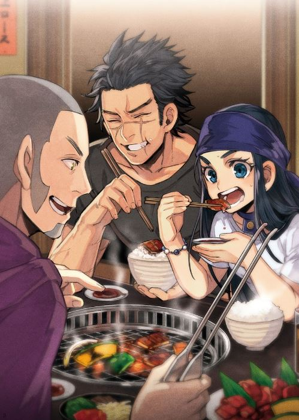

Recipes from
A collection of recipes from the series Golden Kamuy!
Golden Kamuy (Japanese: ゴールデンカムイ, Hepburn: Gōruden Kamui) is a Japanese manga series written and illustrated by Satoru Noda. The story follows Saichi Sugimoto, a veteran of the early twentieth century Russo-Japanese War, and his quest to find a huge fortune of gold of the Ainu people, helped by a young Ainu girl named Asirpa.
Here some of the most tasteful Ainu dishes from the serie!
───── index ─────
Citatap Yuk-ohaw Kombu SitoRecipe project by: Emme Gray